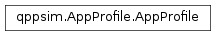

qppsim.AppProfile module¶
Documentation¶
Module that defines an Application Profile.
An Application Profile defines a template for applications that share their behavior in terms of data rate (defined as the combination of packet size, inter-packet interval, number of packets per session, and inter-session interval). These values are defined as tuples containing the name of a random distribution in numpy.random, and the parameters to such distribution as a list. Additionally, we can define the distribution to be ‘constant’, which will return always the first parameter in the list.
-
class
qppsim.AppProfile.AppProfile(name, packet_size, packet_interval, packets_session, session_interval)[source]¶ Bases:
objectClass that defines an Application Profile.
An Application Profile defines a template for applications that share their behavior in terms of data rate (defined as the combination of packet size, inter-packet interval, number of packets per session, and inter-session interval). These values are defined as tuples containing the name of a random distribution in numpy.random, and the parameters to such distribution as a list. Additionally, we can define the distribution to be ‘constant’, which will return always the first parameter in the list.
The class provides a method to generate an application instance based on this profile, by providing the UE where to install the application, and the start and stop times.
The class is hashable and comparable.
-
create_app(name, start_time, stop_time, ue, default_bearer=False)[source]¶ Create an application instance based on this profile, with the provided start and stop time, and name. The application instance is installed in the provided UE
-
name¶ Return the profile name
-
packet_interval¶ Return the inter-packet interval tuple
-
packet_size¶ Return the packet size tuple
-
packets_session¶ Return the packets per session tuple
-
session_interval¶ Return the inter-session interval tuple
-